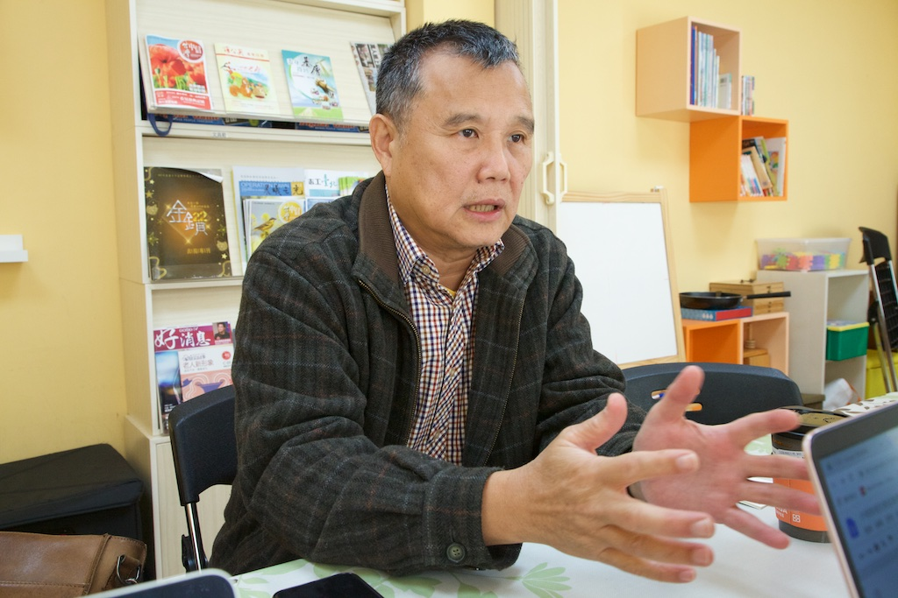
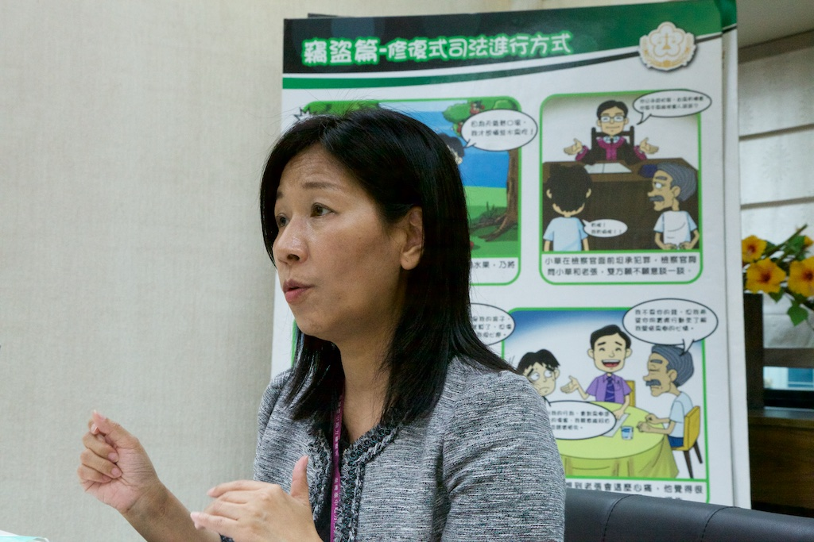
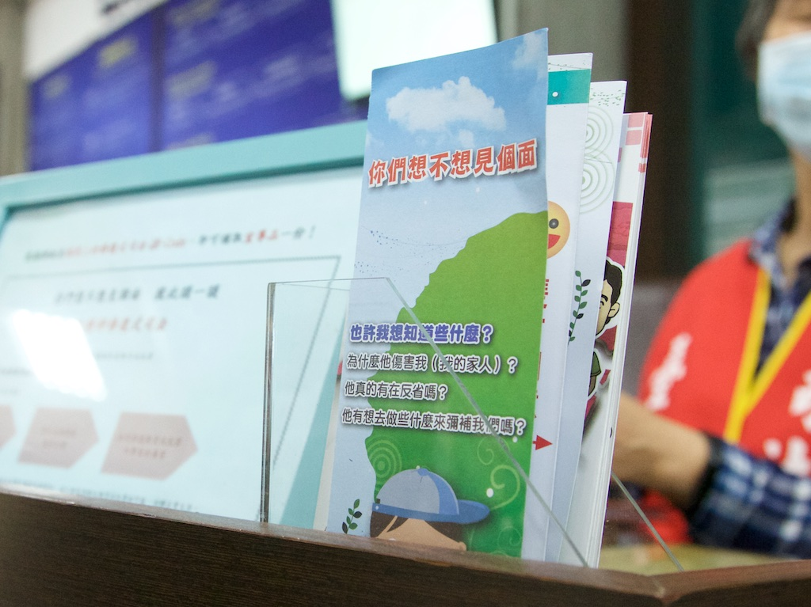

專題
司法天秤無法衡量的傷痛 修復式司法另闢正義之路
刊出日期：2020/05/01
【專題記者白欣、黃婕、王品淇、劉庭莉綜合報導】「那我兒子有活下去的權利嗎？」宋喬安眼眶中隱忍的那一滴淚，最終流了下來。自社會寫實電視劇《我們與惡的距離》播出後，引發熱烈迴響及省思。劇中因一起隨機殺人事件，使得加害人與被害人雙方家屬陷入痛苦的深淵中。社會對於現今司法如何修補彼此情感創傷的討論更甚從前，讓修復式司法逐漸受到重視。
遭遺忘的情緒角落 對話為被害人開啟療傷窗口
民國100年，年僅兩歲大的王昊遭母親同居人虐待致死，引起社會震驚。事件發生後，王昊的姑姑王薇君不停為孩子奔走，並成立中華民國兒童權益促進協會，幫助更多受虐兒童。王薇君曾陪伴保母虐殺孩童的被害家庭進入調解程序，未料調解委員竟對家屬說：「孩子最終還是有價錢的。」接著便拿出計算機，算起賠償費，不顧家屬心中的傷痛。但被害家屬希望的，往往並非金錢賠償。因此，王薇君認為司法制度應要建立安慰或是對話的程序，使被害人及家屬的情緒有出口。
「我們在調解裡比較沒有那麼多時間處理感情、傷害這塊。」台北律師公會犯罪被害人保護委員會主任委員陳孟秀說。同樣是雙方進行對話的機制，相較於調解，修復式司法更重視情緒與感受，提供加害人、被害人及其家屬對話與修復傷痛的機會。
台北律師公會犯罪被害人保護委員會主任委員陳孟秀認為，修復促進者須先傾聽再提問，先了解當事人，再依對方需求給予協助。 圖／王品淇攝
擔任修復促進者（以下簡稱促進者）已有多年的中華修復促進協會理事長柴漢熙指出，修復式正義是最基礎的理念，不過僅刑事案件的處理稱為修復式司法，如用於少年或其他事件，則應稱作修復式程序。而修復式正義的概念應用，也在現今以刑罰為主的司法體系中，走出另一條撫慰療癒的道路。
促進者偕同對話 助被害人逃出自責漩渦
「被害人要真相，因為他會害怕再度被害。」柴漢熙緩緩道出被害人心境。過去曾參與法務部修復式司法方案實施計畫的他分享，不論犯罪程度輕重，「為什麼我會被傷害？」的聲音會不斷在被害人心裡迴盪，導致被害人開始檢討自我，甚至深陷其中、無法走出。

比起修復式司法，修復式正義更廣義且更符合其理念，柴漢熙期待能透過推廣，讓被害人正義得以恢復。 圖／王品淇攝
透過修復式司法，試圖以對話使雙方釐清事情的責任歸屬，除了讓被害人走出自責情緒外，也進一步讓正義獲得實現。在法務部保護司針對修復過程事後的問卷調查得知，有75％的被害人感到正義獲得實現，承諾未來會避免此類事件再次發生的加害人更高達93％。法務部保護司解釋道：「透過對話，也讓施暴的人去了解，做了這件事對他（被害人）造成的影響是什麼。」
但要讓雙方真正走到面對面談話的這步，是需要相當的勇氣與努力。柴漢熙說明，被害人會害怕坐到桌前，不敢詢問被傷害的原因。因此需仰賴促進者輔導的技能，陪伴、支持、鼓舞被害人與加害人，給予被害人安全感，才能讓被害人在修復對話中主動表達感受。柴漢熙進一步說明，「當一個助人者不是給他方法，而是讓他明白他有能力解決。」
培訓制度多方進行 公私部門歧見不易消弭
目前國內對修復式司法的認知差異大，針對促進者需抱持的理念，便有不同學派的說法。台中地方檢察署修復促進者督導陳怡成認為，促進者應以人為本，並理解當事人的情緒歷程與受傷經歷，才能順利進行對話。柴漢熙則提出無害原則，即促進者應避免對當事人造成二次傷害。不過雙方皆認為促進者不應勸說以和為貴，或試圖說服對方原諒彼此。
此外，促進者背景曾是選任的考量之一。台中地檢署主任檢察官洪淑姿憶述，過去重視促進者心理諮商的背景，認為需具備心理諮商溝通技巧，才適合擔任促進者，幫助雙方的溝通。但時至今日，促進者背景相當多元。以台中地檢署為例，其下的促進者共47位，有近30位擁有律師背景，具有心理諮商專業則有十多位。甚至有部分人員是來自於犯罪被害人保護協會（以下簡稱犯保）的志工，退休的觀護人員亦參與其中。
有鑑於促進者來自不同專業，無論是法務部、地檢署或是民間機構，皆會根據促進者的背景進行課程訓練。卻因現階段對促進者的培育尚未有一致的標準，導致各方對於培訓方式的認知有所落差，進而形成多種培訓管道，更無法確定何種管道出身的促進者最為合適。
也因公私部門的培訓方式有別，各有利弊與立場，造成兩者間的溝通不善。公部門認為已盡力完善修復式司法的架構，但對民間機構而言，政府部門培訓的時長並不足夠，且專業制度也不夠完整。對此，法務部保護司表示會加強與民間溝通，努力平衡雙方的差異與想法。

台中地方檢察署主任檢察官洪淑姿業管許多業務，仍不遺餘力推廣修復式司法，期待更多案件能在情感上進行修復。 圖／王品淇攝
社會風氣待扭轉 難與刑訟脫鉤成推動阻力
在推行修復式司法時，釐清並表達自身情緒，是對話相當重要的一部分。洪淑姿說明，西方父母會鼓勵孩子表達，東方則較注重於學業，忽視表達與情感控制能力。情緒表達的不熟悉，造成對話效果有限。陳孟秀也表認同道：「台灣人對於談感受是不熟悉的，這是很根本的問題。」
台灣社會風氣對於兇手的不諒解，也形成修復式司法推動的阻礙。法務部保護司認為，推動修復式司法時，需要有經驗者的現身說法，但過往曾出現被害家屬表態欲與加害人對話，社會大眾隨即批評的案例，致使對話過的當事人不願分享經驗，怕再度被傷害。但法務部保護司也透露，尚無法確認當事人是否因社會輿論壓力而不敢參與，「可是這是犯罪事件兩者之間的事情，外人對事件過多的評價，好像是應該被修正的。」
至於修復式司法對於刑事訴訟帶來的影響，各方亦有不同看法。法務部保護司認為，開始修復程序不影響原有的刑事訴訟流程，對話會跟後續的偵查、審判分開進行。但王薇君指出，在訴訟結束前啟動，難以得知加害人是否誠心道歉。他接著說明，惡意加害的案件，若被害人或家屬的心理創傷尚未平復，進入對話將有一定難度，恐也使被害家屬憂心，加害人的道歉會成為日後量刑的考量。
走過十年里程碑：法制化後的下一步？
修復式司法在台推行將屆滿十年，去年立法院三讀通過《刑事訴訟法》部分條文修正案，將其正式法制化，賦予法規依據。對此，中華修復促進協會常務理事陳祥美樂觀看待，他認為修法後讓法律工作者在不同案件上，能有所依循。
但修復式司法在推動上仍面臨許多阻力。王薇君提及，因投注人力資源於培訓並非易事，修復式司法無法一次到位，應先著重培育種子人員為要。陳怡成則補充，身為第一線與被害人、加害人建立對話橋梁的角色，促進者背負重要使命，未來應建立促進者的認證制度，「若沒有篩選機制，受過傷的當事人出去反而會進行反宣傳，使修復式司法更不易落實。」
面對專業人力資源的問題，法務部保護司表示，有法規依據後，在人力跟預算的爭取上會相對有力。且洪淑姿提及，在正式入法前，台中地檢署並未分撥到有關修復式司法的預算，實際執行的經費，是由各地將緩起訴處分金（註）上繳至國庫後，再由犯保向國家申請而來。每年隨著開罰案件的多寡，緩起訴處分金也會有所增減，來源不甚穩定。因此，洪淑姿說：「期待入法後，修復式司法能有獨立預算。」
註：被處以緩起訴處分之被告，會被要求繳交一定金額的錢給國庫，其便為緩起訴處分金。
除此之外，現今法務部保護司申請修復程序的途徑有三種，分別為透過機關轉介、由檢察官發起，以及由當事人自行申請。但對於不同管道的推廣程度仍不足，較難增加民眾參與的意願。法務部保護司認為，正式法制化後，能讓大眾更了解何謂修復式司法。陳孟秀則指出，「修復式司法必須被普及化，要讓所有司法人員都認識這件事。」
修復式司法的入法，除讓法律工作者在不同案件上能有所依據，也逐漸開啟相關政府機構與人民宣導溝通的管道。法務部保護司也表示，未來達到一定規模、標準化流程後，願與民間聯手，讓擁有相同理念的人共同合作。在各方努力下，現今司法體制對於被害人保護有更多別於以往的重視及措施，陳怡成強調：「修復式司法不需要走得快，要走得好，走得扎實。」

除了宣傳文宣、校園演講外，台中地方檢察署也在服務台設立諮詢窗口，讓民眾知道更多相關資訊。 圖／王品淇攝
#大學報
#修復式司法
#修復式正義
#加害人
#台中地檢署
#對話
#我們與惡的距離
#法務部
#被害人